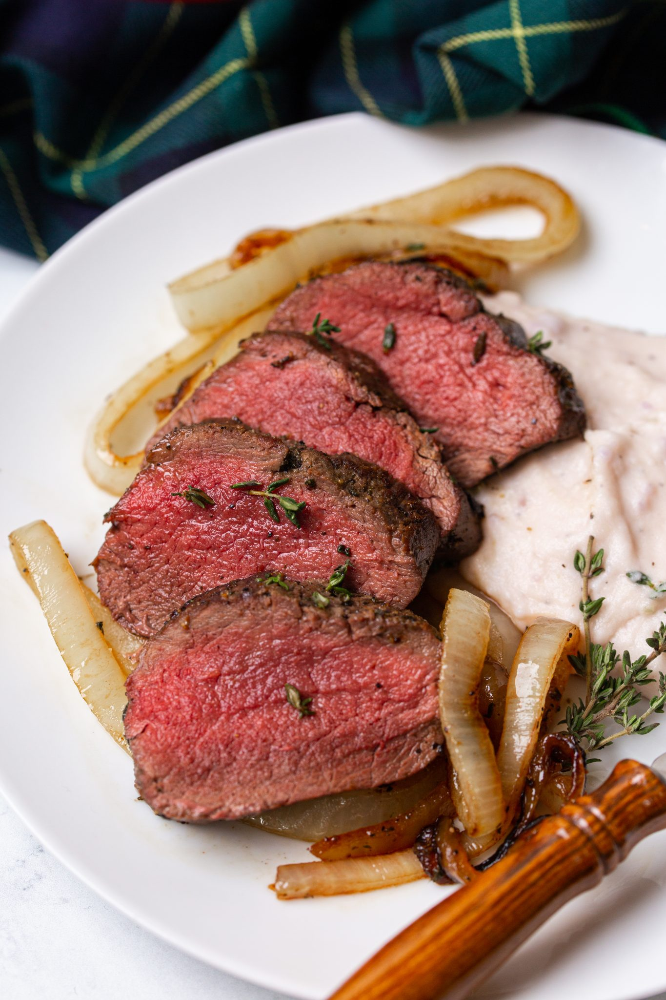

Venison Backstrap with Garlic Butter Onions

Looking for a lightning-fast and nutritious way to enjoy venison backstrap? This recipe is your answer! Packed with lean protein, venison cooks up in minutes, while the pan-searing method locks in flavor. Toasted garlic butter and tender onions add a delicious depth without compromising on health.
Ready in under 30 minutes, this dish is perfect for busy weeknights.
Ingredients:
- Venison backstrap (8 oz.)
- 2 tbsp of Salted Butter
- 1 tbsp of Oliver Oil
- 1/2 tbsp of Salt
- 1/2 tbsp of Pepper
- 1/4 tsp of Minced Garlic
- 1 Whole Onion
Instructions:
- Prep the venison:Pat the venison backstrap dry with paper towels. Season generously with salt and pepper.
- Heat the pan:Heat a cast-iron skillet or heavy-bottomed pan over medium-high heat. Add a drizzle of olive oil.
- Sear the venison:Once the oil is hot and shimmering, sear the venison on all sides for a few minutes per side. This will create a nice brown crust.
- Add aromatics:Once seared, remove the venison from the pan and set aside. Add the butter to the pan along with the chopped onions. Sauté the onions until softened and translucent. Add the minced garlic and cook for another minute until fragrant.
- Reduce heat and return venison (optional): You can optionally lower the heat to medium-low and add the venison back to the pan with the onions and garlic. Baste the venison with the pan drippings for a few minutes to add flavor.
- Check for doneness:Use a meat thermometer to check the internal temperature of the venison. For medium-rare, aim for an internal temperature of 130°F (54°C).
- Rest and serve:Once cooked to your desired doneness, transfer the venison to a plate, tent with foil, and let it rest for 10-15 minutes. This allows the juices to redistribute for a more tender and flavorful piece of meat.
- Slice and serve:Slice the venison against the grain and serve with the onions and garlic from the pan.